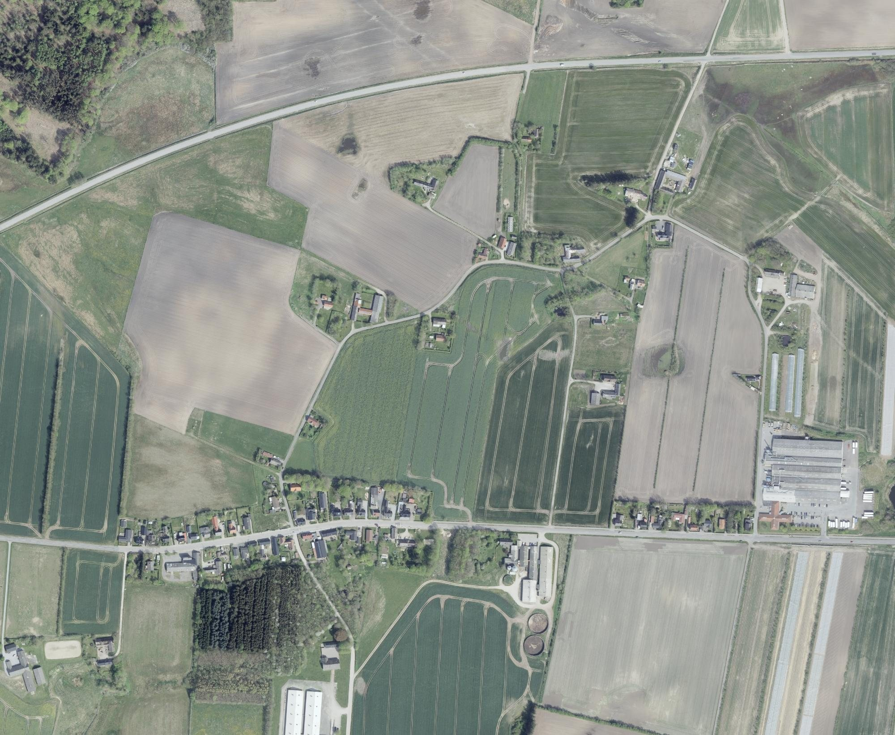
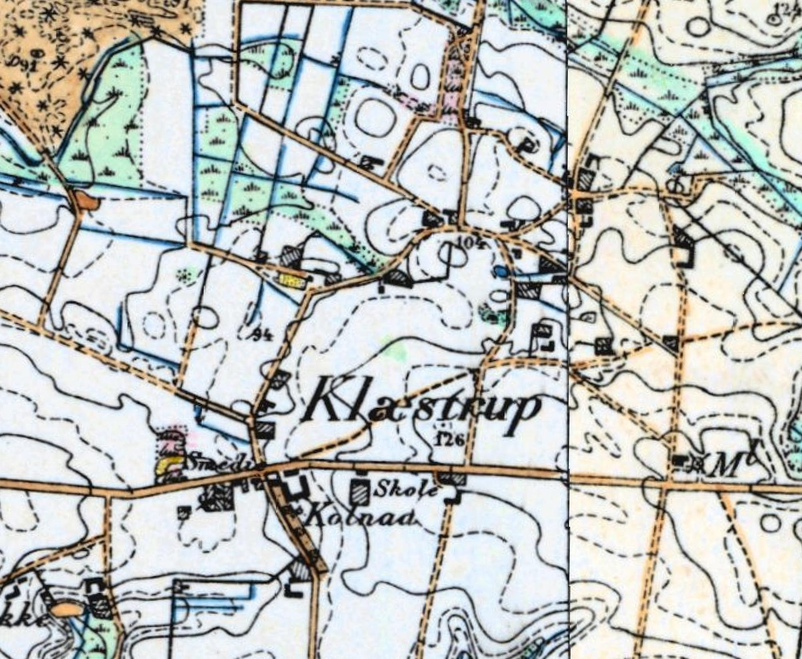
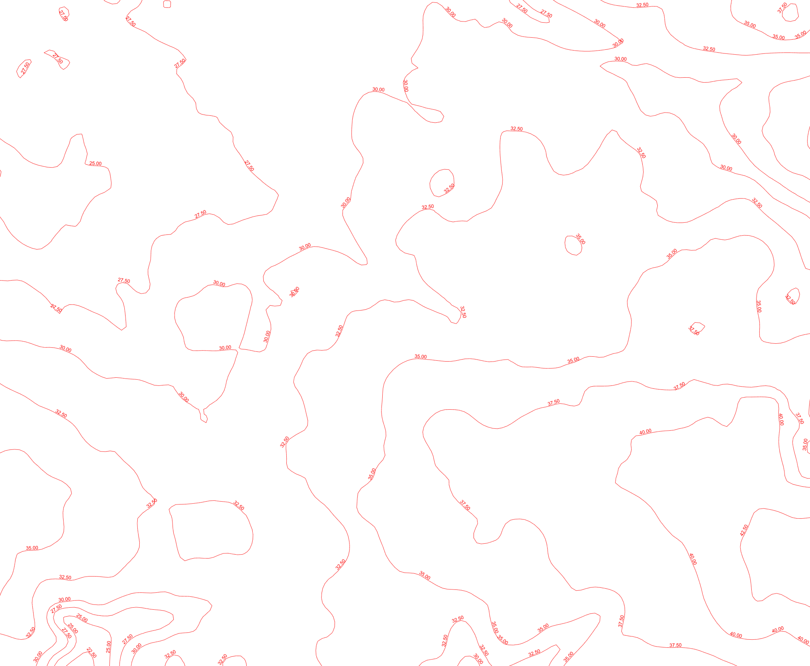

Late in life, Marinus Bøgh sat down and drew Klæstrup from memory. He drew every house, every family and every nickname, as the village stood when he was young. Beside house number 20 he wrote "Jens Bøgh". That house still stands. It is the farm at Gl. Klæstrupvej 41, land parcel 22a. It sits on the edge of the old village green, a stone's throw from the pond Marinus called Osdam. The family name that ends this line came from the old man who lived there: Jens Kristian Pedersen, a smallholder the village called Bøg, godfather and foster father to Jens Kristian Severin Thomsen.
Gl. Klæstrupvej 41, 9740 Jerslev, land parcel 22a of Klæstrup By. A 4,400 m² plot, wooded today, with the farmhouse at its east end. The 1884 General Staff map draws a building on the same spot.
Klæstrup's original core was a ring of farms round a star-shaped green and its ponds. The houses along today's Klæstrupvej came later. The school, smithy and shop stood there.
Not house no. 20. Marinus drew his map with south at the top, so it reads as a mirror image if north is assumed. In 1884 the smithy stood close to this spot.
The archive describes it as a map "with owners, residents, original persons, with their known names and nicknames, told by Marinus Bøgh from memory". He numbered 37 houses and gave each a name and an address. Entry 20 reads:
"20. Jens Bøgh. Plejesøn af gamle Jens Bøgh. død 1914. Gl. Klæstrupvej 41. 22a."
That is "Jens Bøgh, foster son of old Jens Bøgh, died 1914", with the address and the land-register number. Two entries away is "18. Kren Tamsen (Thomsen), Gl. Klæstrupvej 33". Kren is the Vendsyssel form of Christen.
The map is drawn looking north from the main road. Klæstrupvej runs across the top. The school (no. 2) sits left of the smithy and shop (nos. 4 and 5), and the mill (no. 37) and Lunden (no. 32) sit on the left edge. On the ground the mill and Lunden are at the east end of the village. So south is at the top of his drawing and east is on the left. Turned the right way up, house 20 lies north-east of the main street, beside the pond.
Marinus's map, the 1884 General Staff map, today's lidar terrain and contours, and the 2024 orthophoto, all on one coordinate frame. The survey layers come georeferenced from the Danish map services. Marinus's sketch has no scale or grid, so it was fitted by matching seventeen of his numbered houses to their addresses and solving for the best turn, stretch and skew. A sketch drawn from memory can't be exact: his houses land a median of about 50 m from their true places. Because he drew with south at the top, his writing reads upside down once the map is turned to north. Tick "Marinus's map over" to lay his lines on any other layer. On the 1884 sheet, the farms of old Klæstrup cluster round the spot height 104, north of the word "Klæstrup". The school, the smithy ("Smedi") and Koldnaae ("Kolnaa") line the road below. Blue ditches drain a wet meadow to the north-west, and a small watercourse leaves the ponds toward the north-east.



Frame 57.2790–57.2890 N, 10.0480–10.0705 E, about 1.35 × 1.1 km. Drag the white handle to wipe between layers, and drag elsewhere to pan when zoomed. Sources: Generalstabens høje målebordsblade, surveyed 1884; Danmarks Højdemodel; GeoDanmark spring orthophoto 2024 (Klimadatastyrelsen, Dataforsyningen). Shop and smithy positions are the addresses Marinus gave and may have moved over time.
| Year | Source | What it gives |
|---|---|---|
| 1806 | Survey of Klæstrup By's lands, redrawn 1884 (Original 2 cadastral map) | The village is drawn as a star: lanes radiating from a central green, with farm plots in a ring and two ponds. A plot numbered 22 sits on the south side of the green, beside the western pond. Its buildings are drawn in pink. . |
| 1820–22 | Enclosure map of Jerslev and Klæstrup, surveyed 1819 | The open fields are divided among the farms. Klæstrup is a tight cluster of farmsteads and ponds west of Jerslev church. . |
| 1884 | General Staff 1:20,000 map | A farm building inside today's parcel 22a, on the lane east of spot height 104, with the pond about 100 m to the south. . |
| 1999 | Marinus Bøgh's map and list, Egnsmindesamlingen for Jerslev og Omegn | "20. Jens Bøgh … Gl. Klæstrupvej 41. 22a." He places it beside Osdam, the pond. |
| today | Danish land register and address register | Parcel 22a of Klæstrup By surrounds Gl. Klæstrupvej 41. The farmhouse stands at its east end, where the 1884 building was. . |
Severin's baptism and the 1901 and 1911 censuses are read from the originals. Christen's birth date is from the family record.
Christen was born in Skæve parish in the summer of 1850, the son of Thomas Simonsen of Lille Nejsum. By 1876 he was a smallholder at Mellem Vantmose, 8 km east of Klæstrup, married to Petrea Jensen. His sister Inger Marie and brother Jørgen came from Nejsum to stand godparents to their son.
On Marinus's map a "Kren Tamsen (Thomsen)" lives at no. 18, Gl. Klæstrupvej 33, two doors from the Bøgh house. Kren is the local form of Christen. It may be him, or the bachelor Kristen Thomsen of Klæstrup who stood godfather to Marinus in 1903, probably Severin's brother.
Jens Kristian Severin was born at Mellem Vantmose in April 1876 and named for his godfather, the Klæstrup smallholder Jens Kristian Pedersen Bøg. By 1901 he owned the old man's house and kept him and his wife in their retirement. He carried his father's patronymic, Thomsen, and added his foster father's byname: Bøgh. The name became official by licence on 26 February 1906. By 1911 he was simply Jens Bøgh, gaardejer, married to Johanne Kristine Kristiansen, born 1875 at Aistrup.
He grew up in a village small enough for Marinus to fit every household onto one sheet, with a school, a smithy and a shop on the main road, and the old farms round the green and its ponds. The Bøgh house at Gl. Klæstrupvej 41 stood on that green. His son Jens Kristian Marinus was born in Klæstrup in 1903.
Marinus was born at Klæstrup on 15 February 1903, son of Jens Kristian Severin Thomsen and Johanne Kristine Kristiansen, and baptised in Jerslev church on 9 April with old Jens Kristian Pedersen as a godfather. He kept the village in his head for the rest of his life. His map names the people of his youth by the names the village used. There is Pisen, Koldnaae, Dejlig Peter, Skål-Nørgård with his sisters Gine and Mie, Sladder-Maren and Tårs-Martinus. There is a veteran of 1864, a parish councillor who spent fourteen days in jail after the brawl at Store Brønderslev market, and the mother of the village drunk.
At no. 20 he wrote the Bøgh name. A second collection at the same archive, given by a Marius Bøgh, holds four chapters on the history of Klæstrup School from 1847 to 1962 and a list of Klæstrup residents from 1960. It may well be his work too.
Two records answer it. On 2 July 1876 Christen Thomsen's newborn son was as Jens Kristian Severin. One of his godfathers was . The boy was given that man's names, Jens Kristian.
In the 1901 census for Klæstrup, family 40, the householder is "Jens Kr. Severin Tomsen", 24, unmarried, husfader and house owner in agriculture. Living with him are Jens Kr. Pedersen, 74, married, aftægtsmand, and Kirsten Nielsen, 78, aftægtskone. Aftægt was a retirement contract: an old couple handed over their holding, and the new owner housed and fed them for life. A godson taking on a childless couple's house this way was common in rural Denmark.
Severin went by Jens. Old Jens Bøgh was his godfather Jens Kristian Pedersen Bøg, born in Jerslev on 18 June 1826, who died in 1914 aged about eighty-eight. Severin took over his house and his byname. By the he was written Jens Bøgh, a farm owner, with his wife Kristine, Marinus aged eight, Nielsine aged six, and old Jens Pedersen, now widowed, entered as a slægtning: a relative.
"Relative" invites the question. Severin's mother, Petrea Jensen, was born about 1852, when Jens Kristian Pedersen was twenty-six and his wife Kirsten Nielsen thirty. A daughter of his would be called Jensen, and a first grandson named Jens Kristian after her father would follow Danish custom exactly. If so, "foster son" means a grandson raised in his grandparents' house. Petrea's baptism, naming her parents, would prove or disprove it.
The censuses give the household's land as matrikel 18 in 1901 and 35b in 1911. Marinus gives 22a, at Gl. Klæstrupvej 41, for no. 20. Parcel 35b no longer exists on its own; it has been merged into a neighbour. On the 1806 survey, 35b was a small plot on the west edge of the village green, about 100 m from 22a. Either the family's house moved within the old village, or the land was re-parcelled and Marinus gave the number in use when he wrote. Both lie on the same green, beside the same pond.
What it means. Bøgh is an old spelling of bøg, the Danish word for the beech tree, from Old Danish bøk. The silent h is a spelling habit of the 1700s and 1800s, kept as many families froze their names on paper. As a surname it usually comes from a place: a farm called Bøgen or Bøgholt, a house by a beech, or a beech wood.
The law that made it possible. For centuries country people in Denmark carried patronymics. Christen, son of Thomas, was Christen Thomsen, and his son was a Christensen. A royal decree of 1828 required each child's surname to be fixed at baptism, but in the countryside patronymics carried on for decades. The name law of 1904 changed things. It let any family take a new, distinctive surname cheaply by a simple application, to thin out the endless Jensens and Hansens. Many families took the name of their farm or their district in the years that followed. A Thomsen who became Bøgh, keeping Thomsen as a middle name, fits that pattern exactly. The date is on record: in the margin of Marinus's the priest later struck out Thomsen, wrote Bøgh, and noted "Navnet Bøgh i Henhold til Navnebevilling af 26/2 1906". The family took the name by name licence on 26 February 1906.
Where the name came from.
The village green and its ponds. Old Klæstrup was a forte village: farms set round a common green, with lanes leading out to the fields like spokes. The 1806 survey draws two ponds on the green. One of them is Marinus's Osdam, right beside house 20. On the 1884 map a small watercourse runs from the ponds toward the north-east, and blue ditches drain a wet meadow on the north-west side of the village. Most of that water has since been drained. Switch the slider to the lidar terrain to look for the hollows it left.
The school. Klæstrup Gamle Skole stood on the main road at Klæstrupvej 82, a number that no longer exists. The 1884 map labels "Skole" on the north side of the road, at today's Klæstrupvej 80. A village school was the only one most children attended, usually from age seven to fourteen. It is where the family learned to read the catechism and write their names.
The smithy and the shop. In Marinus's day the smithy was at Klæstrupvej 72 and Alfred Christensen's shop next door at no. 70. In 1884 the map shows a smithy, "Smedi", about 150 m further west, close to today's Klæstrupvej 56. It may have moved, or there may have been two.
The mill. Klæstrup Mølle stood at the east end of the village, Marinus's no. 37, "Thea, widow". The 1884 map marks it with an M beside the road.
Koldnaae. The farm Marinus calls Koldnaae, no. 3, is labelled "Kolnaa" on the 1884 map, south of the road by the school. Its old farmhouse was pulled down when the farm moved out into its fields, which happened to many village farms after enclosure. The wood south of the village is still called Koldnaae Skov on his map.
Names, nicknames and addresses as given in the archive's description of the map. Land-register numbers are his. Addresses are those in use when the list was written.
| No. | Household | Address | Parcel |
|---|---|---|---|
| 1 | Jens Pedersen (Pisen). Took the family name Klæstrup | Klæstrupvej 92 | 8a |
| 2 | Klæstrup gamle Skole, the old school | Klæstrupvej 82 | 2d |
| 3 | Koldnaae. Lars Kristian Kristensen | Klæstrupvej 76 | 38a |
| 4 | Smedien, the smithy | Klæstrupvej 72 | 26c |
| 5 | Købmanden, the shop. Alfred Christensen | Klæstrupvej 70 | 26b |
| 6 | Sine Rugholm, widow (Peter Rugholm d. 1917). House built 1906 | Gl. Klæstrupvej 7 | 33d |
| 7 | Jerek-Marit, widow of Smed Jerek (Erik) | Gl. Klæstrupvej 10 | 34e |
| 8 | Kresten Vangsted | Jerslevvej 345 | 5c |
| 9 | Davle-Peter (Peter Nielsen) | Skagensvej 6 | 6d |
| 10 | Jacob Kragbak | Gl. Klæstrupvej 21 | 20a |
| 11 | Galel-Skrædderen, the tailor | Gl. Klæstrupvej 19a | 37b |
| 12 | Klytti, later Davle-Henry and Andrea | Gl. Klæstrupvej 19 | 18b |
| 13 | Laurits Holm | Risholmvej 51 | 5k |
| 14 | Filli-Søren | Risholmvej 49 | 5e |
| 15 | Anton Sørensen (Holmgård) | Risholmvej 69 | 5h |
| 16 | Jørgen Smed's children (Marit) | Gl. Klæstrupvej 26 | 16a |
| 17 | Niels Hansen | Gl. Klæstrupvej 31 | 21b |
| 18 | Kren Tamsen (Thomsen) | Gl. Klæstrupvej 33 | 35a |
| 19 | Skål-Nørgård with sisters Gine and Mie | Gl. Klæstrupvej 33a | 23a |
| 20 | Jens Bøgh. Foster son of old Jens Bøgh. d. 1914 | Gl. Klæstrupvej 41 | 22a |
| 21 | Toes-Sine (Tårs), widow | Nedre Klæstrupvej 30 | 8b |
| 22 | Røv-Søren, married to Stine | Nedre Klæstrupvej 24 | 3i |
| 23 | Skrædder-Karen (since pulled down) | ||
| 24 | Lunken-Line, widow. The old Koldnaae farmhouse before it moved out | ||
| 25 | Sladder-Maren, widow | Nedre Klæstrupvej 26 | 44 |
| 26 | Kresten Olesen, parish councillor. Took part in the brawl at Store Brønderslev market; 14 days in jail | Nedre Klæstrupvej 16 | 5b |
| 27 | Sigten-Marie, mother of the drunkard Jens Sigtenborg. House pulled down | by a closed lane ESE of Nedre Klæstrupvej 16 | |
| 28 | Kræn (Kresten) J. Pedersen | Gl. Klæstrupvej 49 | 19a |
| 29 | Anton Rump (Nielsen) | Gl. Klæstrupvej 52 | 14a |
| 30 | Slagter-Kræn, home butcher | Nedre Klæstrupvej 28 | |
| 31 | Klavs, widower. Veteran of 1864 | Gl. Klæstrupvej 66 | |
| 32 | Anders Lunden | Gl. Klæstrupvej 61 | 4b |
| 33 | Niels Nedergård, parish councillor, married to Martine | Gl. Klæstrupvej 51 | 17a |
| 34 | Tårs-Martinus, married to Anna | Jerslevvej 485 | 1ad |
| 35 | Henrik Asholm, married to Grethe | Jerslevvej 475 | 31d |
| 36 | Dål-Peter (Dal), married to Stine | Gl. Klæstrupvej 35 | 15a |
| 37 | Klæstrup Mølle, the mill. Thea, widow | Gl. Klæstrupvej 75 | 7h |
Choose any image to open it full screen. Pinch, scroll or double-click to zoom.